TODO: This is currently 3 separate guides concatenated together (see the h1 headings): “Using Ed”, “Ed Guide for New Users”, and “Gitbugs”. We should clean this up and merge the guides into one coherent guide at some point. ~peyrin, Jun 2025
Using Ed
Authors: Ethan Ordentlich, Jedidiah Tsang
Introduction
We use Ed Discussions as our course forum. If you’re new to Ed, please read the Ed guide, which should get you familiar with this platform. This post includes a collection of guidelines for etiquette on Ed, that we ask you to read entirely so we can all have an enjoyable experience this semester!
Keeping Ed Inclusive
Any content on public forums like Ed that targets, excludes, disrespects or discriminates against a certain individual or community will be removed and the person responsible for the content will face repercussions. Please aim to keep the climate inclusive for everyone. If at any point you have felt targeted, excluded, disrespected, or discriminated against by a student or someone from our course staff, please fill out our Incident Report form to report it. If you would rather not speak to someone from staff, there are several campus offices you may report to instead (https://diversity.berkeley.edu/report-incident).
Overall Requests
We don’t want to start this with a list of what not to do, but please don’t:
- Post unhelpful follow-ups
- Follow-ups like “+1” and “me too” contribute nothing but cause annoying emails to be sent to everyone following the post. These may be deleted. You can use the heart icon near a post to express “+1”, gratitude, etc.
- Use annoying or misrepresentative titles
- These are titles in all caps or with an exorbitant amount of punctuation just to capture the attention of users. Please keep titles (and content in general) descriptive and professional.
- Post off-topic or speculative content or trolling
- Content that is unrelated to the course and/or non-educational does not belong on Ed. Content that is speculative, drama mongering, or intentionally misleading prevents effective communication from course staff and other students.
- Say “nevermind”, or “fixed” if you figure out the answer to your own question
- The forum is a wonderful source of collective knowledge. Answering your own question is valid, and contributes to this collective knowledge. Everyone hates when somebody replies to their own question with something like “Nevermind, I got it!”, or when they don’t answer at all. Other students can’t learn from that if they happen to have the same problem. Instead, add an answer or comment with your solution!
Why Use Forums?
Recent research from Duke/NC State/UNC/UF has shown that student participation on course forums, like Piazza and Ed, is most beneficial when students ask constructive questions that reflect their reasoning or attempts to solve a problem. By creating and asking these constructive questions, students are practicing their metacognitive skills, or how they think about approaching problems and learning.
Forums are also an effective way of seeking asynchronous help. Office hours and lab aren’t always happening, and it isn’t always possible to speak synchronously with a TA. Instead, you can ask a question on Ed, and continue working on other things while you wait for a response.
Additionally, forums and other asynchronous methods of asking for help are a widely used tool outside in many real-world contexts as well, from StackOverflow to internal company tickets.
CS 61B Forum Policies
Many of the benefits of forums only apply if we all use it appropriately and effectively, and put in the work to maintain its quality.
Categories
We have many students in CS 61B, and will almost certainly have many posts. To organize these posts, we use Ed categories. To make a post or ask a question on Ed, you must select an appropriate category.
An overview of the categories is as follows:
- Logistics
- General questions about what’s happening in the course.
- Lectures
- Questions about each lecture’s content. This category has a template asking for the lecture nubmers.
- Projects, Labs, Homeworks
- Questions and requests for debugging help on the assignments. These
categoies have subcategories for each assignment in. Each subcategory also
has subsubcategories, for distinguishing between private debugging questions
(Gitbugs) and various kinds of public questions. For example,
Projects - Project 1 - Gitbugs, andProjects - Project 1 - Conceptual (Circular Buffer). - Discussions
- Questions and conceptual clarifications on discussion worksheets. This category has a subcategory for each week.
- Exams
- Questions about exam logistics, past exams, and anything related to exams. As we get closer to the exam, we will add additional categories for asking questions about previous exams.
- Miscellaneous
- Any questions about the course that doesn’t fit into the above categories can go in here.
- Social
- Looking to form a study group or hold a study session? Post here.
- External Announcements
- Any postings from external groups not affiliated with CS 61B will be posted in this category. Posts in this category must be approved by course staff.
How to Ask, and How to Not Ask Questions
Asking for help on Ed is unfortunately slower, as we can’t spend all our time on the forum. Before you ask for help, you should try to answer your question yourself! We also want you to learn how to help yourself, which in some cases can be slower than asking staff, but will be more beneficial in the long run. Some resources that can help you do that are:
- Previous questions on Ed.
- You can search within a category with Ed’s search, so that you don’t have to look through everything.
- Official course materials
- The assignment spec is a great source of information. Additionally, each assignment will have an FAQ linked from the top of the page. The FAQ will be updated while the assignment runs, so check back often! Course staff will also create several supplemental materials for assignments while students work on them, as we find where students are struggling.
- Google or a search engine of your choice.
- While searching Google might not seem like “independent programming”, professional programmers often search the web for solutions to problems similar to the one they are trying to solve. Learning good search techniques now will pay off later in the semester and into your careers. An exception to this is searching for solution code. Don’t do that.
However, you shouldn’t spend hours on the same problem, and should ask for help, possibly on the forum. When you do ask for help on Ed, here are some things that you can do to make sure that the response you receive is more likely to resolve your question.
- Explain what your problem is, and what you think will help you proceed.
- Course staff are not mind-readers. We won’t magically know what’s wrong, or what you want answered.
If your question doesn’t contain enough information for us to be able to answer, or doesn’t show us what you’ve tried so far, we will ask. You’ll get a slower answer overall, but you’ll also learn how you can improve your future questions to get a quicker response.
Similarly, there are some things that you should not do to get a response:
- Asking for “a hint” or “the answer”
- We don’t know what kind of hint you want or what you are trying to accomplish. We don’t even know if you’ve worked on the problem, or if you saw the error and immediately asked.
We will not give the answer, and will instead ask a follow-up question to clarify what you are asking for.
- Saying that “I don’t understand anything”
- It’s very hard, often impossible, to give an answer to this. Instead, you should try to figure out a starting point for what you don’t understand. If you can’t get started, that’s still a valid question to ask – and is very different from “anything”.
Some material here drawn from Adam Blank’s guide on “How to Ask For Help”.
Conceptual Posts
Often, you’ll have a question about a conceptual idea from lab or a project, or a problem on a discussion, past exam, or outside resource. Here are some guidelines that you should follow to get a helpful answer more quickly:
- Don’t ask if your solution “is correct”
- Instead, explain why you think your solution is correct, and point out any pieces that you’re not sure about. Reconstructing your argument is a lot of work for staff to try to go through, so explaining your train of thought to us helps you get a better answer and address any misconceptions you may have.
Private Debugging Help, or Gitbugs
Sometimes, you may run into a problem where you need to show course staff your code. However, per our collaboration policy, you may not post code publicly, including on public Ed posts. Instead, you can use the Gitbugs category for each assignment to make a private debugging post.
Here are some guidelines that apply to asking private debugging questions specifically:
- Link your GitHub repo and push.
- Sometimes (but not always), we will look at your code. This ensures that we can easily look at the most up-to-date version.
- Provide a screenshot of the section of your code you have a question about.
- We will require that you provide a screenshot, so that we know what section of code you’re looking at.
- When describing your bug, be specific.
- Descriptions like “everything”, “it isn’t working”, “it fails the autograder”, “I don’t know”, etc. are not specific. We cannot help without knowing what’s wrong. At a minimum, you should tell us what test is failing, or what error you’re seeing, though this alone doesn’t guarantee that the first response will be helpful.
If you can identify a smaller piece of code, such as a single method or a few lines, that are not behaving as you expect, that’s wonderful – tell us what you’ve found, and what you’re confused about!
- We expect that you’ve tried to debug. Tell us what you’ve learned.
- This goes hand-in-hand with the above guideline! If we can’t tell that you’ve tried to debug, we will not debug for you, and instead ask what you’ve tried. This can be print debugging, or using the IntelliJ debugger. Screenshots can be very helpful here, as long as you explain what we’re looking at!
Ed Tips and Tricks
- Change your email settings to receive fewer emails.
- In the upper right corner, click on your avatar, then “Settings”, and then hit “Notifications” to adjust the number of emails you receive from Ed. Announcement emails will always reach you.
- Follow posts you want to know more about.
- If you see an ongoing question you’d like to keep track of, you can either:
- Click the “Watch” option at the top right of the question to receive email updates, or
- “Star” the post at the top right of the question to keep it pinned on your Ed.
- Refer to other questions, answers, and comments
- Using #N (for example, #1 or #1c) is a clean way to refer to other threads. You can use this to provide an answer to a repeated question, or to point to things that you’ve tried but haven’t worked.
- Make code (and stack traces) readable.
- Use the runnable code button in the editor toolbar so that your code looks nice. Syntax-highlighted code is much easier to read than code as text.
If you have a question about a personal matter that you don’t want other students to see, please make a private post. Private posts are only seen by the course staff. If you want only the head TAs and Josh to see your question, please email cs61b@berkeley.edu.
Ed Guide for New Users
Authors: Omar Khan, Shreyas Kompalli
This is a guide for students new to the course forum Ed. It’ll cover how to effectively ask questions and how to efficiently search for what you want.
At a high level, Ed is an education-centric forum that allows you to asynchronously collaborate with other students and receive guidance from staff. Ed takes some elements from StackOverflow. For those who are unfamiliar, StackOverflow is a public forum where people ask questions related to programming and software engineering. Full time software engineers use this all the time to get quick and reliable answers, so you should feel free to as well! Check out this link for an example question posted to StackOverflow. Now let’s get into Ed.
After reading this guide, you should feel familiar with Ed and able to make the most out of it. Let’s get into Ed specifics.
Landing Page
When you first visit Ed, you’ll see a bunch of posts on the left side of your screen. All important announcements and index posts will be pinned so that you don’t need to spend too much time looking for them. That little blue dot on the left side of the post means that you haven’t viewed that post, so if you see that next to a pinned post you should definitely read it thoroughly. Here is what the landing page of CS 61BL looks like (the summer version of the course).
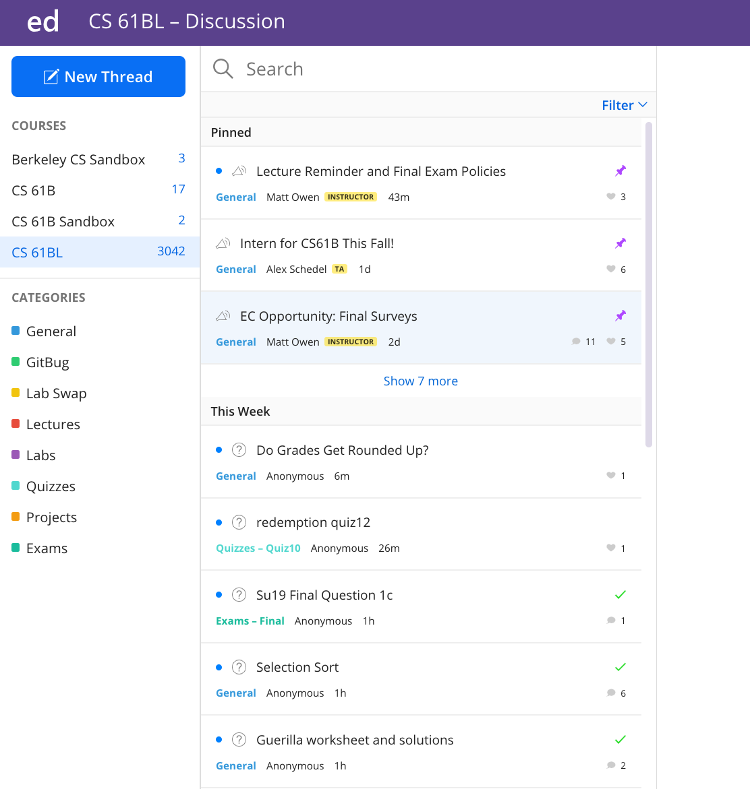
Remember that Ed is the primary point of contact between us, so make sure you read it every day, and pay special attention to it during and around due dates in the case that any deadlines change or we have any important announcements.
Now we’ll dive into the specifics of how Ed works, starting with Questions.
Question
You can create a question or note (called a “post” on Ed) by clicking the big blue ‘New Thread’ button in the top left corner and then selecting what you want to create.
Here is what an unanswered question on Ed looks like:
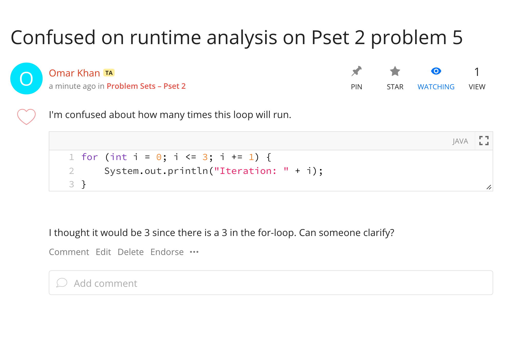
You’ll see that Omar has posted a question that he wants help with.
In Ed, there is more distinction between follow-ups under a thread. If I had a clarification on the question, I can comment on the question. This is not answering the question, so instructors and TAs will still see the question as unanswered. You can see that Allyson has asked for the worksheet Omar’s question is from.
Instructors and course staff can endorse questions and answers. Only staff and instructors can endorse, so you can have more confidence that the answer is correct on this one. If you see an endorsed question, you may want to check it out as it may be particularly insightful!
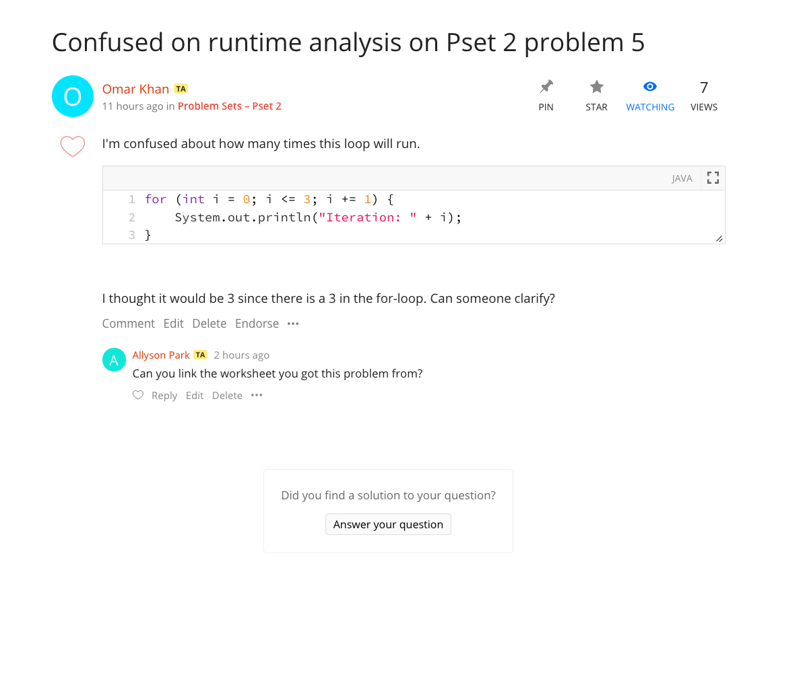
Answers
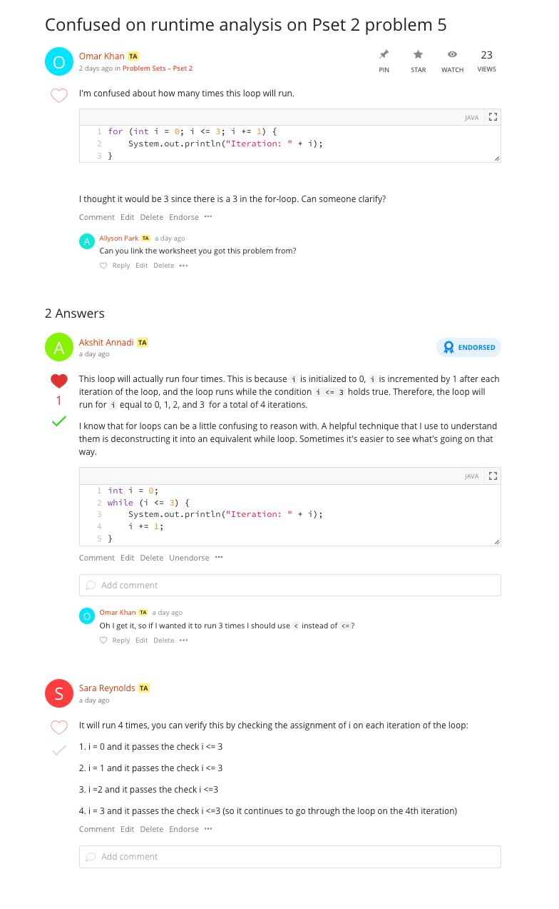
You can see that Akshit has answered Omar’s question and has even gotten his answer endorsed, liked, and has a green check mark. We’ve already talked about endorsement, it just means that an instructor or TA has verified this answer is trustworthy. Everyone can like a post, comment, or an answer, both students and staff. You can think of likes as +1s or a thank you!
Resolving Posts
The green checkmark next to an answer indicates that it has resolved the question. Only one answer can receive the green checkmark, so it will be given to the best answer on the post.
When a staff member answers a question, it is automatically marked with a green checkmark. The person that made the post can also toggle the checkmarks.
If you post a question on Ed, and get an answer from one of your fellow students, be sure to mark it with the green checkmark! Some student answers are just as good as ours!
On the other hand, if an answer does not fully resolve your question, feel free to unmark it! Staff filters for unresolved posts when answering Ed questions, so this will allow your question to be discovered again.
Follow-ups and Comments
You can also create a follow-up on an answer in a hierarchical form. With these hierarchical comments, it is much easier to track what’s going on and answer individual follow-up questions. You can see that Omar has asked a follow-up question on Akshit’s answer.
You can use “Reply” to follow up with a nested, hierarchical comment, or “Comment” to start a different comment chain.
Summary of Icons
Here is a reference table if you get confused.
| Icon | Meaning |
|---|---|
| Given to just one answer on a Question, usually the best answer. | |
| Only given by a TA or instructor that thinks the post/answer is trustworthy. | |
| Given by students or staff, not significant of anything but makes you feel better. | |
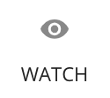 |
Sets this post to be watched by you. You’ll receive email updates on any activity on this post. |
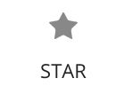 |
Stars this post on your account. Allows you to use a filter to see your starred post for quick access. You might consider starring helpful posts so you can easily and quickly find them. |
Creating an Ed question
Now that we’ve talked about how to “read” an Ed post, we’ll talk about how to write one.
Categories
Categories help the forum stay organized. By adding a category to your post, you are helping TAs find your post and answer it quicker, and also helping other students find your post and learn from the answers.
The first thing you’ll do when you create a post is to select the right category for it and, if applicable, the right subcategory and subsubcategory.
Here is an example where I will ask a question about Pset (problem set) 2:
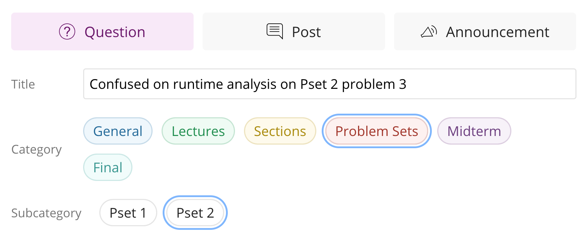
To view only posts in a specific category, subcategory, or subsubcategory, click on the category in the left sidebar.
Meta Options
You’ll have some options under your post if you want to ask anonymously or make your question private where all staff members can see. Feel free to ask anonymously. We do discourage asking private questions, as collective knowledge is helpful, but won’t stop you.
Formatting Options
You’ve probably already noticed the generous formatting options on Ed. This includes adding pictures, using markdown, using LaTeX, and more traditional formatting like bolding/underlining. This makes the question much nicer to read, which makes it more obvious and clear what you are trying to ask. Here is the bar where all the formatting options are located:
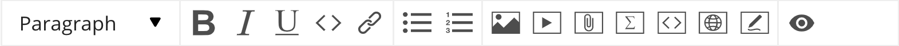
And here is a table describing how to use each formatting option.
| Icon | Meaning |
|---|---|
| Select this to get a drop-down menu of different text types, including code. There isn’t an explicit markdown option, just use the backticks ` as you normally would. | |
| These are your typical bold, italics, and underline options. | |
| This is a shortcut to the code text type. Instead of using this, you should use the interactive code block. | |
| You can use this to hyperlink text in your post. Highlight the word or words you want to hyperlink, click this button, and paste the link. | |
| Bulleted lists and numbered lists. | |
| Inserts an image into the post. | |
| Embeds a video, you shouldn’t ever have to do this. | |
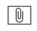 |
Attaches a file to the post. You shouldn’t ever have to do this. |
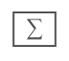 |
Click this to insert LaTeX formatted math into your post. Unfortunately, this will create its own line. Luckily, if you know LaTeX, you can just insert your single $ signs and go for it. If you don’t, it’s really simple to learn since the only thing you’ll ever do in LaTeX is easy asymptotics stuff. You can learn this within 20 minutes. |
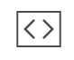 |
Insert an interactive code block. Nicer than the normal code block since this has better syntax highlighting and things like automatic curly brace insertions, which is nice for Java. The language (on the right side) should be set to Java by default, but if it isn’t go ahead and change it. You’ll see 2 checkboxes for “Line Numbers” and “Runnable”. There isn’t any reason to not have line numbers, so keep those on. The runnable option allows us to run your code, but unfortunately it really doesn’t work well with Java (you need to define a class with main), so uncheck this box. |
| Not useful for this class. Allows you to display basic website stuff. | |
| You can draw things with this. | |
| Used to preview your post to make sure all your fancy elements render properly. |
In the following example, you can see that Omar has asked a question about a specific problem from a specific Problem Set and has categorized it properly. Now, in the future, if another student is going through Pset 2 and has some questions they can simply use the filter to see questions in that subcategory and not have to ask duplicate questions.
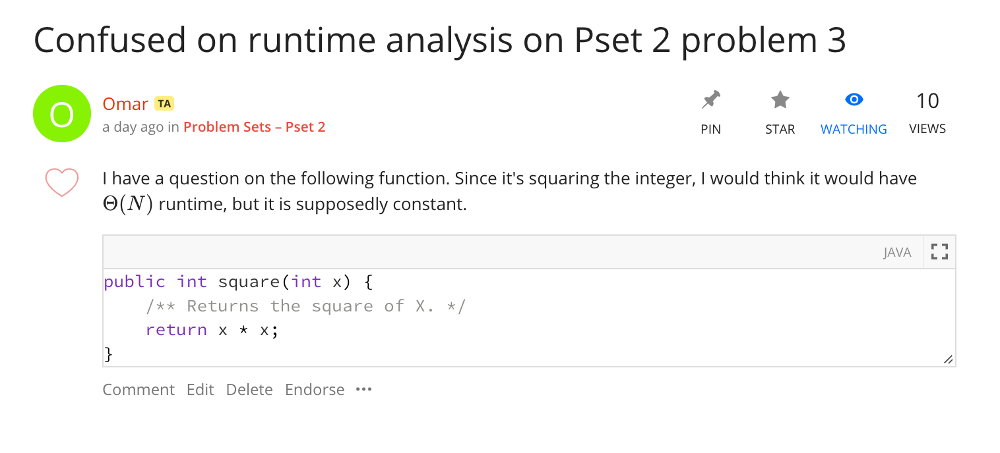
Ed Megathreads
We typically have very long threads (that we called “megathreads”) to
aggregate all questions and clarifications for a specific topic. Megathreads
are nice because you can browse through questions other students had on the
assignment to get a good “birds eye view” of the specific parts your fellow
students were getting stuck on. There is a megathread for each assignment and
thus all questions about that assignment exist in one place, and you can
then use your browser’s search (CMD + F) to find something more specific. Each
follow-up can be marked as Resolved or Unresolved to alert the TAs that a
question needs answering. This way, your question won’t get lost and we’ll
always know if the megathread needs our attention.
In CS61B, we will have a megathread for each assignment; you’re to post any and all questions you have about the assignment there. These megathreads will be monitored closely by staff to ensure that all questions are answered and nobody’s question got “lost” in the sea of other student questions.
But we ask that you please search for your question before asking to reduce the clutter and make Ed as effective as possible for your fellow students and TAs.
Here is what a megathread looks like in Ed:
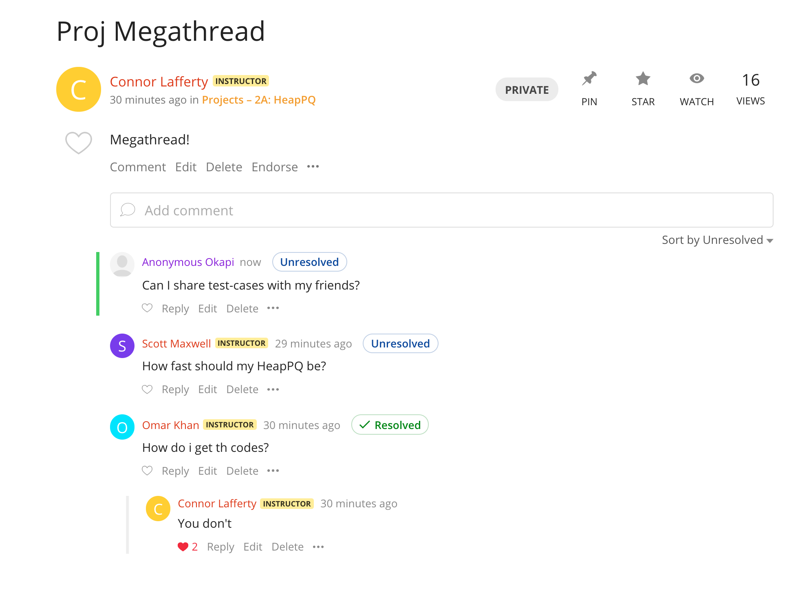
You’ll see that the top-level comments have a special flag that says Resolved
or Unresolved: this lets the TA know whether or not this comment needs
attention. It’s important to mark your comment as Unresolved after you add to
an existing comment, otherwise TAs won’t know that you want that question
answered! You can mark a comment as Unresolved/Resolved by clicking the
Unresolved/Resolved button which will mark it as the opposite thing.
To add a new comment here, just start typing in the text-box right under the post that says “Add comment”:
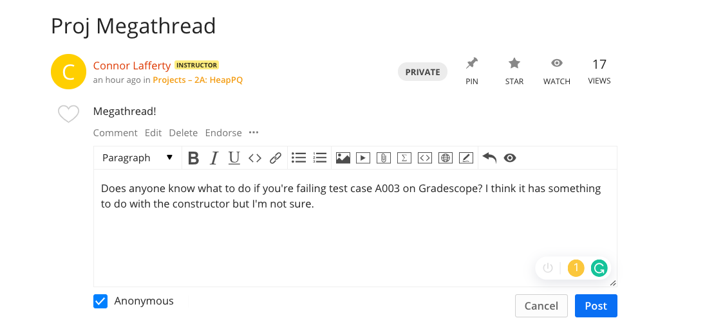
You have the ability to ask your question anonymously: if you do, you’ll be given an anonymous animal as your pseudonym (you can see that a student asked anonymously and was donned the name “Anonymous Okapi”) that we can use to reference you in follow-ups.
By default, when you post your comment it’ll be marked as Unresolved.
We’ll have our megathreads pinned, so you can find them under the “Pinned Posts” section that we talked about above.
You can also sort the comments on a megathread:
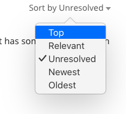
If you sort by “Top”, you’l get the comments in order of most liked to least liked. This will help you find comments that fellow students found most helpful in completing the assignment. Don’t forget to like comments you find helpful to make this sort even better!
If you sort by “Unresolved”, you’ll get the unresolved comments first and then the resolved comments afterwards. This mainly helps TAs answer all the comments that need attention, but if you like to help answer questions too you’re more than welcome to help us out :)
Search
Remember how we said Ed search was great? Let’s go over how to use all the search features as well as good search strategies.
Here is what the results look like for a good search:
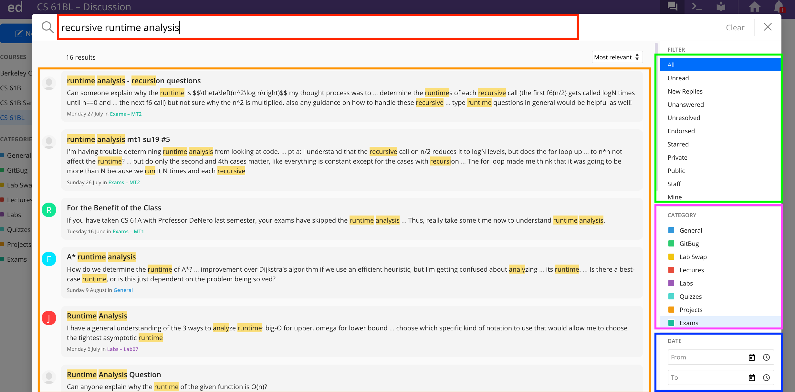
Let’s go over how to use all the search features as well as good search strategies:
Using Keywords
This is the red (top-left) box on the image above. Ed search is a lot like Google search. If you had a general question on how to do recursive runtime analysis, you could search “How do I calculate runtime on recursive functions?”. Instead, you could also search for the key words in this well formatted question, so something like “recursive runtime analysis”, which would give you even better results. When you write a well formatted question like before, Google actually extracts the keywords for you. While we can’t write natural language questions into Ed, given the right keywords it does a very good job. Ed is able to search not only for post/question titles, but also down to sub comments level. As you type a new post title, it will also show you related posts according to what you type. Make sure to check them out, as a question you have in mind may have already been posed!
These next two features will definitely help you search, but often times the right key words will make the right post jump to the top of the results.
Search Filters
This is the green (top-right) box on the image above.
If you’re looking for a question with an answer you can trust, you might want to filter for only endorsed posts. This will limit your search to only posts that have been endorsed by staff. Similarly, if you are a helpful student and like to answer other student’s questions, you can search for unanswered or unresolved questions and help them. Thanks in advance!
Search Categories
This is the purple (center-right) box on the image above.
Like previously mentioned, you can limit your search to just posts in particular categories. So if there was an inheritance question on midterm 1 that you had questions about you can filter your search to posts with that subcategory.
Search Date Ranges
This is the blue (lower-right) box on the image above.
You can also specify a range of dates that you want to search for. Less useful, but it exists if you need it.
Closing
The guide is good for letting you know what things Ed offers, but the best way to learn it is to just use the thing! Remember to keep up the Ed etiquette so that all students can benefit from the wonderful questions you all ask :)
Ed has some official resources that are subsets of what’s covered in this page:
Gitbugs
Author: Omar Khan
Gitbugs are your way to get debugging help on your assignments (labs, homeworks, projects). Submitting a Gitbug is as simple as you creating a private Ed post, following a particular template, and then waiting to get a response. After you submit your Gitbug, all staff members will see it and we can clone your GitHub repository on our own computers, look for the bug, and then give you a hint/explain where you should be looking. We try to get a 24 hour turnaround, but please be patient with us the day before or the day of a deadline as we get a huge influx during those times.
When to make a Gitbug
A Gitbug should be the last resort for you. The assumption is that you’ve tried to debug your code and even after this you couldn’t find the bug. For example, if you’re completing a method in a project and failing the provided/graded test for it, do not immediately submit a Gitbug! Developing debugging skills is an official part of the course, so we do expect you to run into bugs and solve them on your own. On the other side of things, we don’t want you to be stuck on a bug for 10 hours, so we have Gitbugs to help you get unstuck. We trust that you can make the decision for yourself as to whether you’ve put in honest effort looking for the bug, but be warned that if it is obvious you haven’t tried debugging your own code, we will reject the Gitbug.
Making a Gitbug
When making a Gitbug, please follow these exact steps to keep everything organized for us and make sure we don’t reject your Gitbug:
- Select the big blue ‘New Thread’ button in the top left corner
- Select ‘Question’ as your type of post
- Give a useful title to your Gitbug post, for example: “Project 1: Array upsizing works, but downsizing throws ArrayIndexOutOfBoundException errors”
- Select the Category as Gitbug and the Subcategory as whichever assignment this is
- Choosing the Gitbug category on Ed should show you a template for the question asking you important questions to help us debug your code. If you don’t see it, you didn’t do step 2. It should look like the below screenshot.
- Fill out the questions in full sentences and if the questions tell you to do something then make sure you do it (i.e. ensuring you’ve pushed your code to GitHub). We will automatically reject Gitbugs without thorough explanations.
- Make sure you’ve made your post private
- Post your Gitbug!
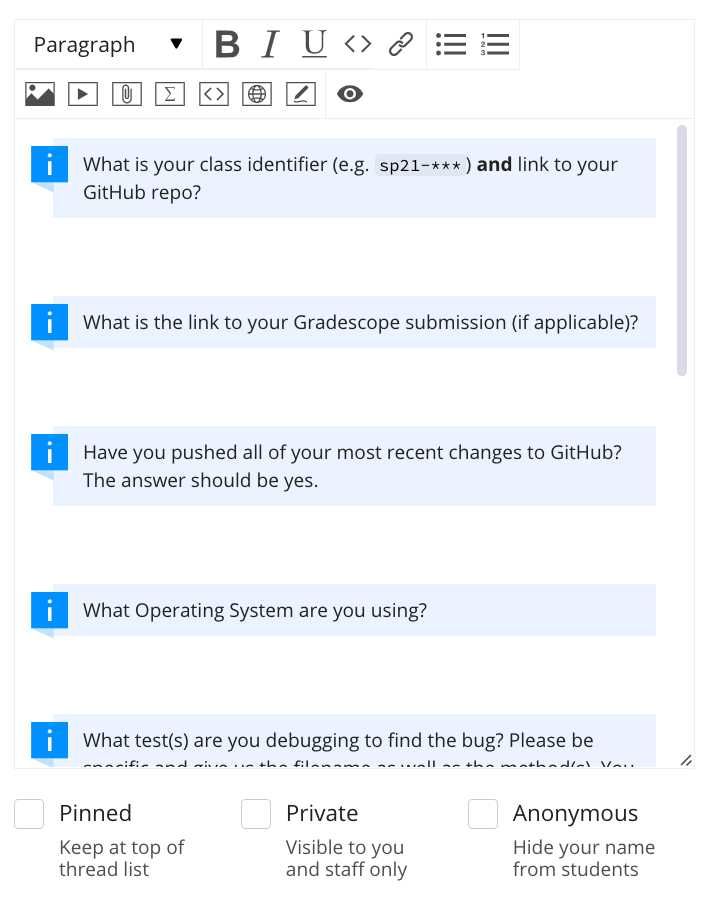
It’s important that you fill out the Gitbug template exactly and put in reasonable effort here, otherwise we won’t have all the important information to help you solve the problem. We will not be helping with low effort Gitbugs and will reject them. You should be spending anywhere from 5-10 minutes creating your Gitbug to ensure it is of high quality. The better your Gitbug is, the faster we can solve it and we can reciprocate with a high quality answer too since we have all the details neccessary to see tell what errors you made/misconceptions you have.
It’s highly unlikely that a screenshot will make your Gitbug better, so please don’t add any screenshots unless you truly think it’s useful. Remember that we’ll be able to see your code when we pull your GitHub repository, so no need to screenshot IntelliJ or something like that. If you had an error message that you think is important to the bug, please copy and paste that error message into the post so that it’s easily searchable.
It’s really important that you have a good description of what the bug is and what you’ve done to try and solve it so far. Here is an example of Omar doing a bad job:
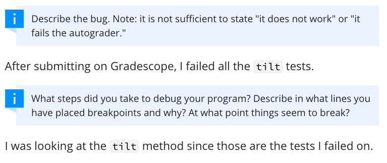
Notice how Omar doesn’t even address the question. He should add to his response the specific test that failed (i.e. number) and maybe even what the error message is. Also, it’s clear that Omar didn’t try to debug since he said he just looked at the code. Maybe he did try and debug but just didn’t include it: even if he thinks his debugging was useless, he should still include it as it can give really good insight/hints into what is going on, and it’ll save the TA a ton of time. Sorry for Omar, but this Gitbug gets rejected.
Now let’s look at what a good Gitbug looks like:
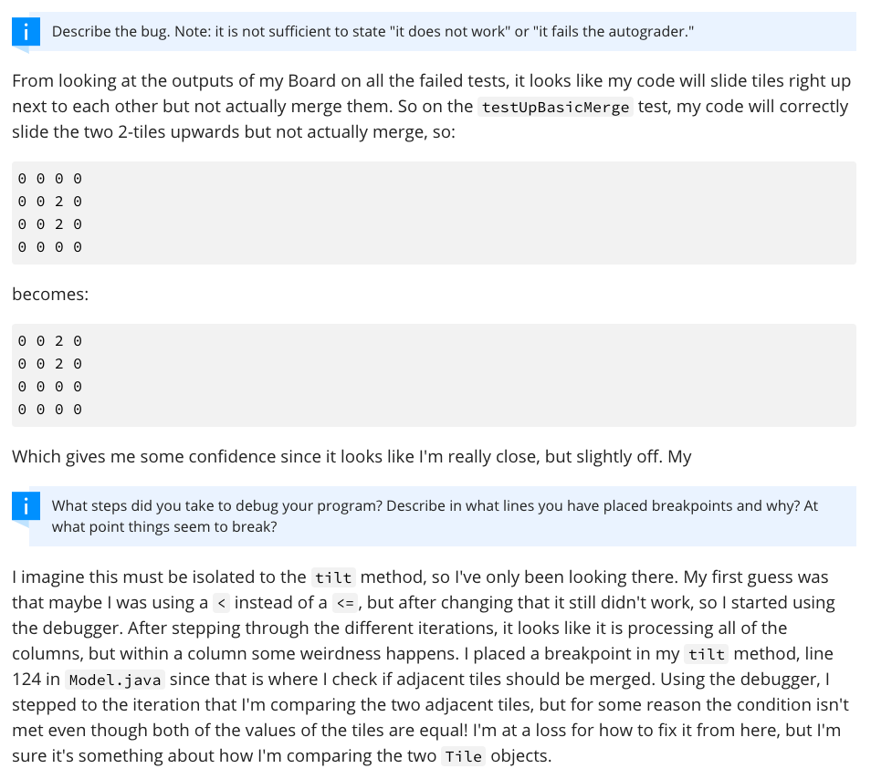
Omar did a great job here! There is a clear test that he is failing and he has even provided the error message for us. There is also ample evidence that he has tried to debug the code and even some hypothesis that he has plus things he already tried. Omar has also provided specific lines he has placed breakpoints at as well as what they saw when they debugged. This saves the TA time and Omar will get a very clear response on what the bug is since his question is so specific. Great job Omar!
After submitting your Gitbug you just sit tight and continue working on something else in the meanwhile.
Additionally, if you submit a Gitbug and were able to resolve it before we responded, update the post by leaving a comment that the bug is resolved. We will not process any of your future Gitbugs if we clone you code and see that you have already resolved a bug without updating your Gitbug post.
Once your Gitbug has been answered, do not reply. We won’t be doing any back and forth on Gitbugs. If you still have another bug, you should instead make a new Gitbug. The one exception is if you want to say “thank you” or something like that :)